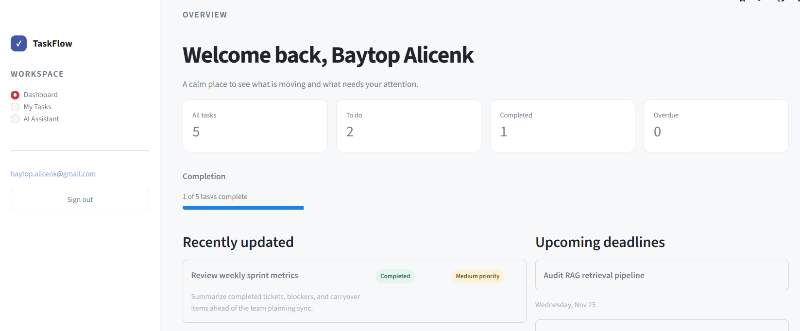
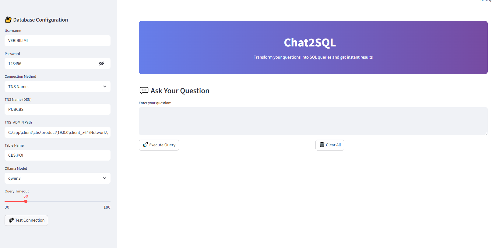
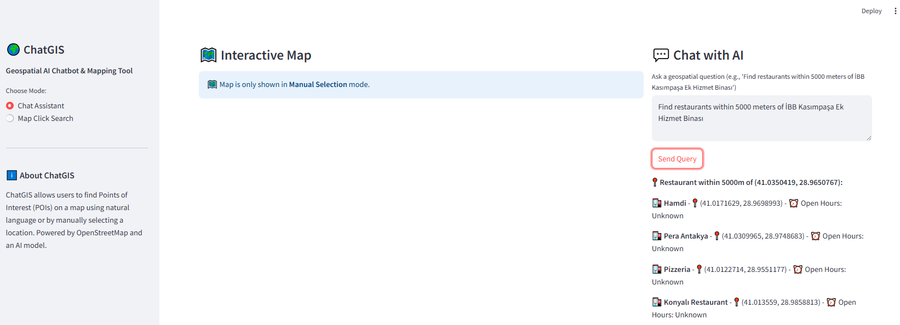
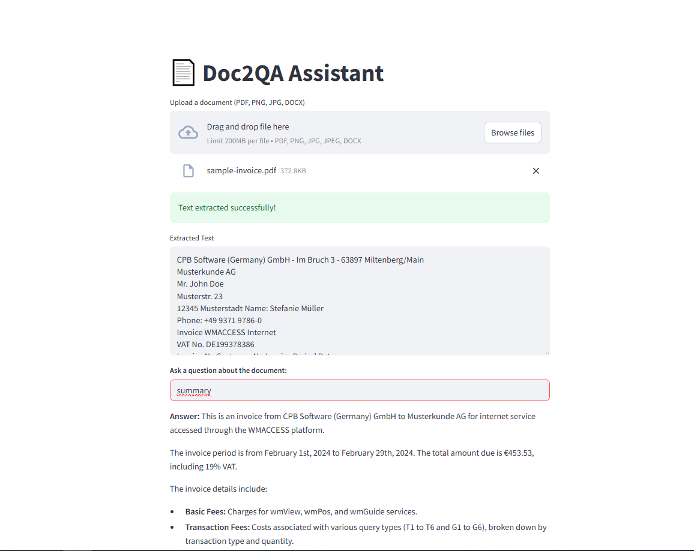
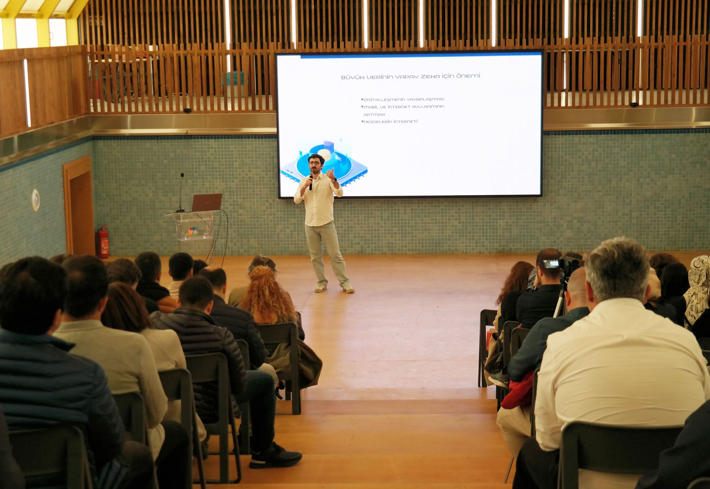

Featured

TaskFlow
Autonomous multi-agent task automation system powered by LangGraph, FastAPI, and Supabase pgvector with observability via Arize Phoenix.
Building intelligent systems, LLM agents, and scalable machine learning workflows.

Autonomous multi-agent task automation system powered by LangGraph, FastAPI, and Supabase pgvector with observability via Arize Phoenix.

Natural language to SQL interface for enterprise databases enabling geospatial querying and automated query synthesis.

Conversational GIS assistant capable of geocoding, spatial queries, and interactive map visualizations from natural language.

Tech keynote at Istanbul Metropolitan Municipality on modern Generative AI architectures, agent workflows, and practical applications (May 2025).

Document ingestion and question answering system using OCR and LLM reasoning to extract structured insights from scanned papers.

Autonomous multi-agent orchestration architecture for research, synthesis, writing, and code assistance using open LLMs.

Autonomous financial research agent tracking stock fundamentals, analyst consensus, and market metrics via real-time data feeds.

Keynote presentation at Istanbul Metropolitan Municipality GIS Day 2024 covering AI and spatial analytics integration (November 2024).

Retrieval-augmented question answering pipeline built with vector embeddings and open-source LLMs for contextual knowledge retrieval.

Computer vision pipeline tracking and counting marathon runners across designated timing lines with persistent IDs.